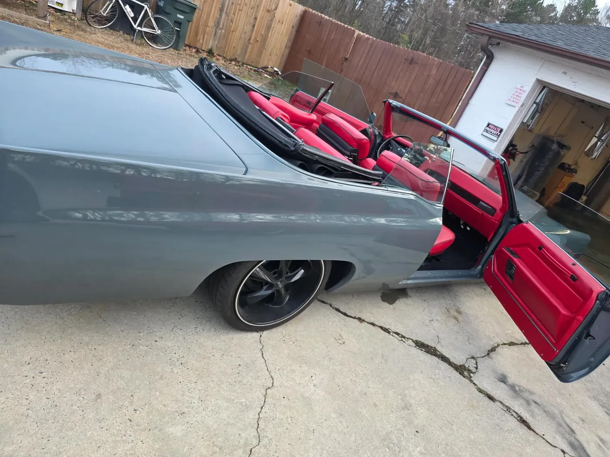

Period-correct or upgraded? Choosing an interior for a classic

Every classic interior project starts with one question: is this car going to shows, or is it going to be driven? The answer changes the material list.
For a show car we chase originality — correct grain patterns, correct stitch spacing, correct carpet weave. Judges notice, and so do buyers.
For a driver we keep the look and quietly improve the comfort: modern foam densities, better sound deadening under the carpet, and seat frames repaired properly instead of shimmed.
You do not have to choose blind. We keep samples in the shop and can show you what period-correct and upgraded actually look like side by side.
Bring the car to Monroe and we will build the spec with you before any cutting starts.